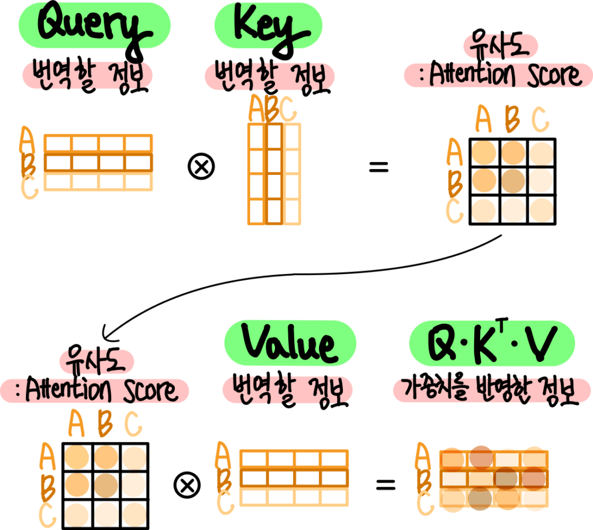

IPCG 랩 격주 세미나에서 케라스 창시자에게 배우는 딥러닝의 Transformer 파트의 일부를 발표함.
문장에 있는 모든 단어에 대해 Q,K,V를 인코딩하는 예제 시퀀스를 알아보았다
def self_attention(input_sequence):
output = np.zeros(shape=input_sequence.shape)
for i, pivot_vector in enumerate(input_sequence):
scores = np.zeros(shape=(len(input_sequence),))
for j, vector in enumerate(input_sequence):
scores[j] = np.dot(pivot_vector, vector.T)
scores /= np.sqrt(input_sequence.shape[1])
scores = softmax(scores)
new_pivot_representation = np.zeros(shape=pivot_vector.shape)
for j, vector in enumerate(input_sequence):
new_pivot_representation += vector * scores[j]
output[i] = new_pivot_representation
return output
코드 리뷰는 최대한 세세하게 이유 하나하나 남겨가며 진행 할 예정이다.
output = np.zeros(shape=input_sequence.shape)
결과 값을 저장하기 위해 0으로 채워진 빈 행렬을 만든다.
for i, pivot_vector in enumerate(input_sequence):
scores = np.zeros(shape=(len(input_sequence),))
enumerate는 리스트의 요소와 인덱스를 같이 가지고 온다.
i는 인덱스 이며 pivot_vector는 문장 내 각 단어를 벡터로 변형한 것이다.
즉, 이 코드는 문장내 단어를 꺼내 다른 단어들과 비교하기 위함이며
여기서 pivot_vector는 이전시간에서 배운 Q와 동일하다.
for j, vector in enumerate(input_sequence):
scores[j] = np.dot(pivot_vector, vector.T)
두번째 반복문에선 vector가 key로 나오게 된다.
결과적으로 중첩된 반복문은 Q와 K가 비교되는 과정을 의미한다.
np.dot(a,b) 내적을 통해서단어 사이의 유사도를 계산하고,
여기서 vector.T 즉 전치행렬을 사용하는 이유는
둘 모두 $(T \times d_{key})$의 shape를 가진 행렬이기 때문에 연산을 위해 사용한다.
$(T \times d_{key}) \times (d_{key} \times T) = \mathbf{T \times T}$
scores /= np.sqrt(input_sequence.shape[1])
scores = softmax(scores)
각각의 내적 값이 커지는 것을 방지하기 위해서 softmax 사용 이전에 값을 정규화한다.
$\sqrt{d_{key}}$로 나누는 이유는 $QK^T$의 평균은 0이지만 분산은 $d_k$가 되기 때문이다.
분산을 1로 만든 후 점수합을 1로 만드는 softmax를 사용하여 가중치를 결정한다.
new_pivot_representation = np.zeros(shape=pivot_vector.shape)
for j, vector in enumerate(input_sequence):
new_pivot_representation += vector * scores[j]
다만 이 것은 이해를 하기 위해 작성한 코드이며 실전에선 벡터화된 구현을 사용하기 위해
케라스에서 지원하는 MultiHeadAttention층을 사용한다.
num_head = 4
embed_dim = 256
layer = MultiHeadAttention(num_heads=num_head, key_dim=embed_dim)
output = layer(inputs,inputs,inputs)
지금까지 하나의 입력 시퀀스만을 고려했었지만 번역의 예제로,
트랜스포머는 소스 시퀀스와 타겟 시퀀스라는 두개의 시퀀스를 다루는 시퀀스 - 투 - 시퀀스 모델이다.
outputs = sum(inputs * pairwise_scores(inputs, inputs))

앞의 순서부터 inputs의 네이밍을 $inputs_1, inputs_2, inputs_3$라고 하겠다.
이전 시간에 다루었던 Q, K, V를 떠올려 보면
Q = $inputs_2$
K = $inputs_3$
V = $inputs_1$
즉 쿼리 키 값 모델을 표헌 한 것으로 쿼리에 있는 모든 원소가 키의 모든 원소와 얼마나 관련 있는지
그리고 그 것을 계산하여 값에 있는 모든 원소들의 가중치를 구해 합을 하는 것 이다.
결과적으로 트랜스포머 스타일의 어텐션은
찾고 있는 것을 설명하는 참조 시퀀스인 쿼리와, 정보를 추출할 본체인 값을 가지며
쿼리와 쉽게 비교 할 수 있는 키가 각 값에 할당되어 가중치의 합을 반홚한다.